| (1) | (2) | (3) | (4) | (5) | (6) | |
|---|---|---|---|---|---|---|
| † p < 0.1, * p < 0.05, ** p < 0.01 | ||||||
| Robust standard errors in parentheses, clustered by legislator. | ||||||
| This table shows estimates of the effect of constituent demand (population, employment, education, public assistance), legislator capacity (chamber, reporting committee, committee chair, subcommittee chair, and ranking member positions and years in office) and institutional positions that may affect strategic behavior (reporting committee membership, perceived ideological distance from the agency, co-partisan president) on levels of interbranch representation. | ||||||
| Dependent variable | Count | Count | Count | Count | Count | Count |
| Constituent Demand | Constituent Demand | Constituent Demand | Constituent Demand | Constituent Demand | Constituent Demand | Constituent Demand |
| Population (Millions) | 0.042** | 0.068** | 0.694* | 0.040** | 0.073† | |
| (0.009) | (0.009) | (0.302) | (0.007) | (0.043) | ||
| % Government Sector | 2.858** | 0.069 | 3.280** | 0.154 | 1.081 | -1.921 |
| (0.455) | (0.714) | (0.458) | (0.734) | (1.358) | (6.822) | |
| % College Grad | 0.784** | 0.113 | 0.640** | -0.022 | 2.328* | 1.719 |
| (0.230) | (0.221) | (0.230) | (0.228) | (0.919) | (4.404) | |
| % Public Assistance | 0.675 | 1.294 | -0.502 | 0.459 | 13.637** | 8.476 |
| (1.032) | (1.414) | (1.010) | (1.518) | (3.570) | (6.147) | |
| Strategic Choices Shaped by Political Environment | Strategic Choices Shaped by Political Environment | Strategic Choices Shaped by Political Environment | Strategic Choices Shaped by Political Environment | Strategic Choices Shaped by Political Environment | Strategic Choices Shaped by Political Environment | Strategic Choices Shaped by Political Environment |
| Competitive General | 0.055 | 0.002 | 0.081* | -0.011 | -0.040 | -0.054 |
| (0.033) | (0.022) | (0.038) | (0.030) | (0.059) | (0.042) | |
| Competitive Primary | -0.017 | 0.108** | ||||
| (0.045) | (0.040) | |||||
| President's Party | 0.018 | 0.033** | 0.012 | 0.027† | 0.047 | 0.027 |
| (0.022) | (0.012) | (0.028) | (0.016) | (0.043) | (0.021) | |
| Republican | 0.034 | 0.045 | -0.074 | |||
| (0.041) | (0.043) | (0.089) | ||||
| Independent | -0.217** | -0.477** | ||||
| (0.066) | (0.095) | |||||
| Ideological Distance | -0.125** | -0.125** | -0.165** | |||
| (0.022) | (0.025) | (0.044) | ||||
| Distance x President's Party | 0.000 | 0.025 | -0.011 | |||
| (0.021) | (0.025) | (0.037) | ||||
| | 1st Dim. DW-NOMINATE | | -0.542** | -0.387** | -0.694** | |||
| (0.127) | (0.140) | (0.241) | ||||
| Capacity | Capacity | Capacity | Capacity | Capacity | Capacity | Capacity |
| Reporting Committee | 0.245** | 0.100** | 0.290** | 0.065† | 0.147** | 0.130** |
| (0.023) | (0.026) | (0.024) | (0.035) | (0.047) | (0.045) | |
| Three+ Years in Office | 0.215** | 0.183** | 0.199** | 0.183** | 0.432** | 0.310** |
| (0.028) | (0.023) | (0.033) | (0.031) | (0.084) | (0.063) | |
| Committee Chair | 0.253** | 0.166** | 0.325** | 0.234** | 0.115 | 0.130** |
| (0.050) | (0.040) | (0.070) | (0.062) | (0.070) | (0.044) | |
| Ranking Member | 0.217** | 0.160** | 0.173** | 0.182** | 0.149* | 0.161** |
| (0.052) | (0.034) | (0.063) | (0.049) | (0.067) | (0.052) | |
| Subcommittee Chair | 0.036 | 0.013 | 0.040 | -0.023 | -0.028 | 0.078† |
| (0.027) | (0.019) | (0.028) | (0.022) | (0.062) | (0.040) | |
| Served in State Leg. | 0.000 | -0.042 | 0.100 | |||
| (0.034) | (0.036) | (0.077) | ||||
| Senate | 0.762** | 0.586** | ||||
| (0.071) | (0.078) | |||||
| Observations | 395,218 | 242,087 | 300,471 | 175,278 | 70,965 | 53,901 |
| Year x agency fixed effects | X | X | X | X | X | X |
| Legislator x agency fixed effects | X | X | X | |||
| All legislators | X | X | ||||
| Only House | X | X | ||||
| Only Senate | X | X | ||||
4 Explaining Unequal Interbranch Representation
ABSTRACT: We test explanations of overall interbranch representation work using cross-sectional, within-legislator, and within-district differences-in-differences specifications. We find that legislator capacity explains the greatest share, followed by constituent demand and legislator strategy. The strategy dynamics we do find are working with ideologically aligned agencies, and staff allocation decisions in which constituency service staff funding is associated with more overall representation, and communications staff is associated with less.
Using the data and methods described in the previous chapter, we now begin to put theories to the test. This chapter examines the extent to which various explanations explain interbranch representation overall. The remaining five chapters will repeat this analysis with respect to different types of interbranch representation.
For each explanation, four statistics help us interpret the relationships. First, we investigate the extent to which various theories explain variation in the total volume of interbranch representation across members of Congress (cross-sectional differences). Second, we examine variation over time within each legislator’s office. Third, we aggregate the average impact of each statistically significant relationship on the total volume of interbranch representation provided by all members of Congress per year. Fourth, we estimate the impact of each statistically significant relationship on the level of inequality in interbranch representation that districts receive.
We take this multi-pronged approach because we are interested in explanations of interbranch representation both at the level of legislators and the U.S. government overall — what conditions yield more or less (and more or less equal) interbranch representation. In doing so, we test what explains behavior and inequality.
If you remain skeptical of our argument that interbranch representation is a coherent concept to be studied as a whole, you might think of the empirical results below as a noisy analysis of causes of constituency service that we focus on in the next chapter (because constituency service is the vast bulk of the data). For a skeptic who wants to see analysis broken out by type of activity in the following chapters, this chapter is best read as a presentation of our method of analysis—a test drive of the methods reviewed in the previous chapter. The following chapters will use the same approach with abbreviated explanations of the statistics.
4.1 Explaining Differences in Overall Levels of Interbranch Representation
Table 4.1 presents the six main models we use to assess possible drivers of the annual number of requests each member makes to each agency in this and the following five chapters. Models 1 and 2 pool the House and Senate, with an indicator for whether the legislator was in the Senate that year. Models 3 and 4 subset to members of the House. Models 5 and 6 subset to senators. All models include agency-year fixed effects to account for common shocks that affect all legislators’ level of work with an agency in a given year (as well as unevenness in agency record-keeping and provision of records across years). Following Equation 3.1, models 2, 4, and 6 include legislator-agency fixed effects. Thus, the relationships in these models leverage variation within legislator-agency pairs over time.
4.2 Demand
Estimating the level of constituent demand on each legislator’s office and estimating the effect that constituent demand has on contacts with federal agencies are both difficult, primarily because demand is directly affected by both the capacity and strategic behavior of legislator offices when they advertise constituency services. What appears to be a root cause of variation in legislator contacts with agencies (incoming requests for help from constituents) is, in part, an effect of the office’s capacity and decisions to invest in promoting the services they offer, which, to our knowledge, no one has systematically measured (but see Henderson et al. 2023).
However, some underlying features of one’s constituency likely affect the volume of incoming constituent demand. We start with these background characteristics of a constituency that are largely out of a legislator’s control (even if how they translate to actual demands of the office may vary by what services they decide to advertise and how easy they make it for constituents to contact them). Specifically, we examine the effects of the four variables from the U.S. Census that map most closely to the kinds of things political science theory predicts will increase constituent demand: estimated district population, the percent of workers in the government sector (including state and local government), the percent of college graduates (with a BA or higher), and the percent of people receiving public assistance (including SNAP).
Unsurprisingly, the first row of Table 4.1, Model 5, shows a positive relationship between state population and the amount of interbranch representation that Senators do. There is significant variation in the number of constituents per state, and budgets for staff are determined by the population of the state. Under these conditions, failing to find a significant relationship between state population and senators would be surprising evidence against both constituent demand and congressional capacity as drivers of interbranch representation.
Interesting, Model 3 shows that even small differences in the estimated population of House districts correlate with interbranch representation. However, this could be driven by population in small states with only one district with a lower population. This correlation is notable because, unlike the Senate, members of the House receive the same Members’ Representational Allowance for staff. The pooled model (1) also shows the same relationship. The within-legislator models show a significant relationship for changing population in the pooled model (Model 4) and a possible relationship in the Senate (Model 6), but there is too little variation in estimated district population over time to estimate in this full model. A model with fewer other variables (Section C.2) shows that increasing state population increases the amount of interbranch representation that senators do, but no such relationship exists for representatives. In general, these results support Hypothesis 2.1, with the note that differences in House district population are enough to see a significant correlation with levels of interbranch representation, whereas changes in estimated district population do not seem to be large enough to observe an effect.
Using the coefficients and fixed effects from Table 4.1 model 2, Figure 4.1 shows the predicted average levels of interbranch representation per year per senator compared to two counterfactual scenarios: (a) where all states had the minimum state population (and thus all senators had the staff budgets equal to a senator from Wyoming) and (b) where all states had the average state population (and thus all senators had staff budgets equal to those of a senator from Tennessee). Unsurprisingly, there is a general pattern of decreasing inequality in interbranch representation in both scenarios. About 10% of the overall inequality across senators (as measured by the Gini coefficient) is due to differences in state population and staff resources attached to state population. But a significant amount of inequality (differences among the darker blue dots) remains to be explained. These same counterfactuals show similar results if we estimate them using the difference-in-differences coefficients and fixed effects from Model 2.
By construction, all Senate offices are predicted to do less interbranch representation in counterfactual scenario a, compared to predictions using actual state populations. This adds up to an average difference of about 9,000 fewer requests to federal agencies per year. Thus, we might say that the effect of some states being larger than Wyoming is +9,000 requests per year in this model. In scenario b, by construction, there is little difference in the total volume of interbranch representation because of population, because we are using the average level of the predictor. In general, this means that Senators at the top of the distribution, who tend to be from large states, decrease in the Tennessee counterfactual while those in the lower half, who tend to be from smaller states, see increased predicted levels. However, there are some cases where senators in the upper half of the distribution do more interbranch representation in the counterfactual. These are senators from smaller states whose offices, despite having fewer resources and representing fewer constituents, were nevertheless among the more active Senate offices and would be expected to be even more active if their state had a larger population and their office had more resources.
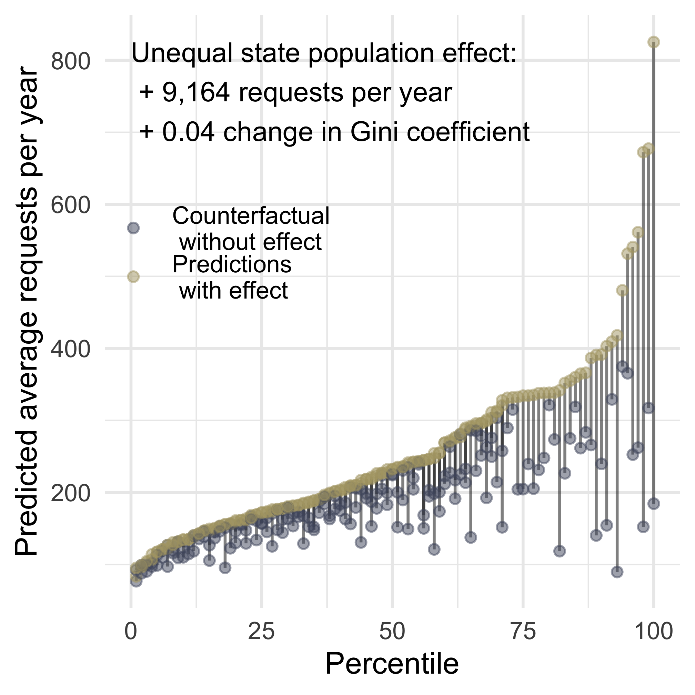
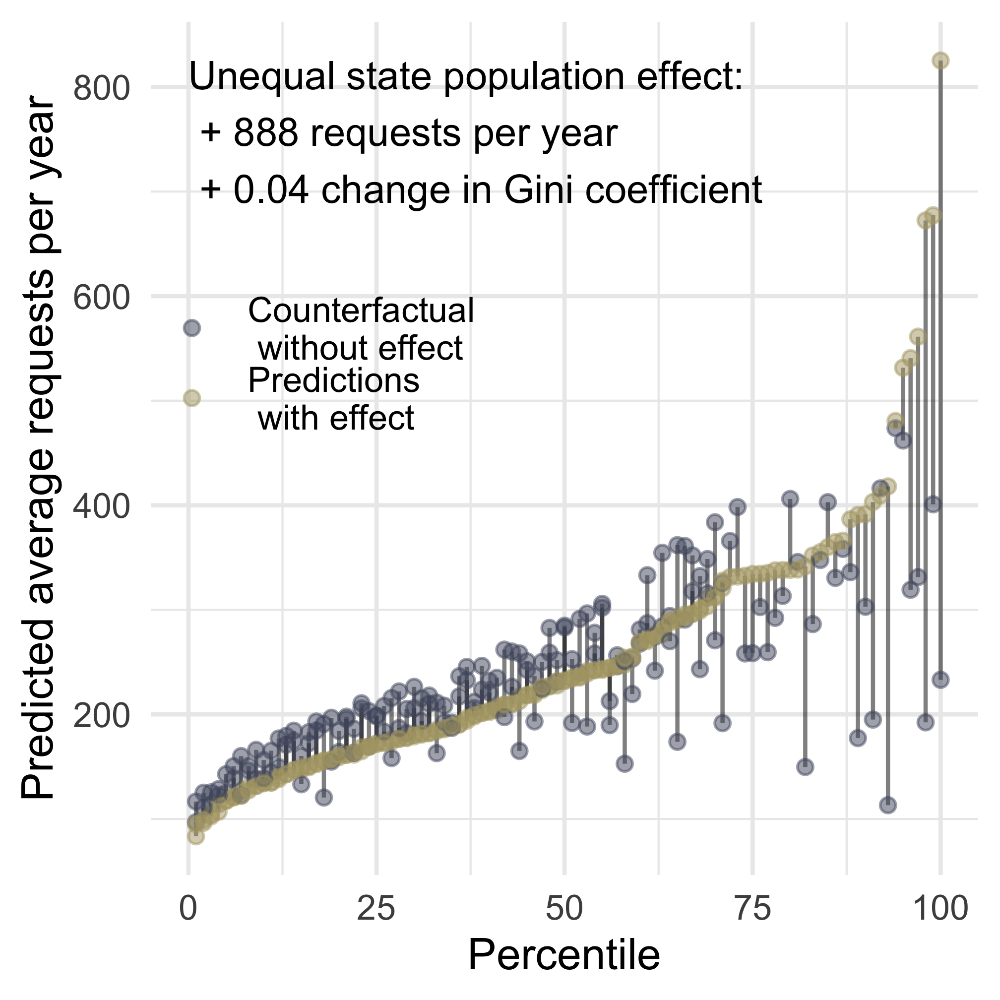
The next two rows of Table 4.1 show similar results for the two indicators we use to test Hypothesis 2.2: that legislators with more demanding constituents will do more interbranch representation— the percent of government-sector workers and the percent with a bachelor’s degree or higher. Except for a failure to reject the null of no relationship between government workers and interbranch representation in the Senate, all of the specifications show a positive relationship — legislators who represent higher portions of these constituents do more interbranch representation. However, we do not see the significant within-member relationships that we would see if this were a causal relationship. It is possible that the percent of government sector or college-educated workers in a district does not vary sufficiently over time to have an effect on interbranch representation. Thus, we have a correlation but not causal evidence for Hypothesis 2.2.
Hypothesis 2.3 — that legislators serving constituents who need more help from the federal government will do more interbranch representation — only has correlational support in the Senate. Again, it may be that the percent of a constituency receiving public assistance simply does not vary sufficiently over our time period to affect levels of interbranch representation.
Figure 4.2 shows predictions with observed values compared to counterfactuals where legislators have less demanding constituencies, specifically no government workers (a) and no college graduates (b). Both of these features of district demand are related to large substantive differences in levels of interbranch representation but little change in inequality, because people with districts with a large share of government workers or college graduates are not sufficiently clustered on one end of the distribution.
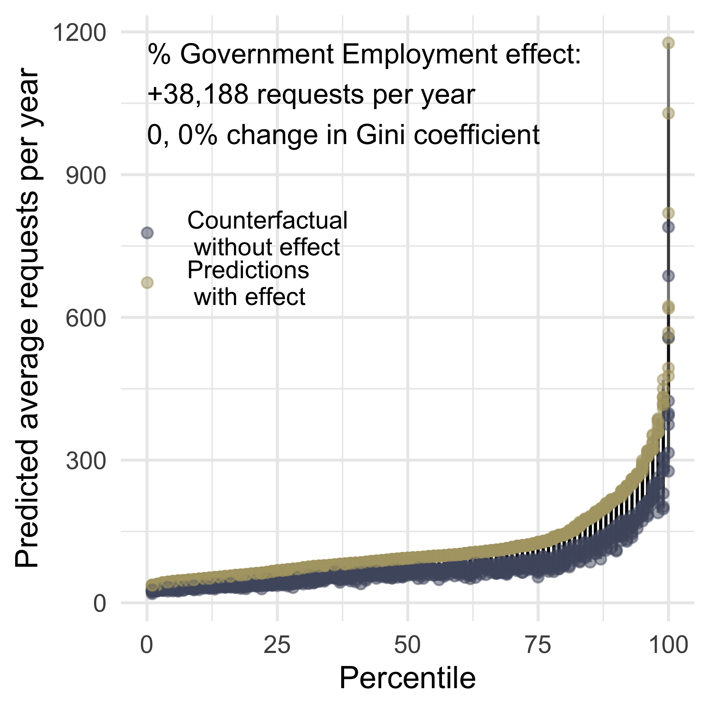
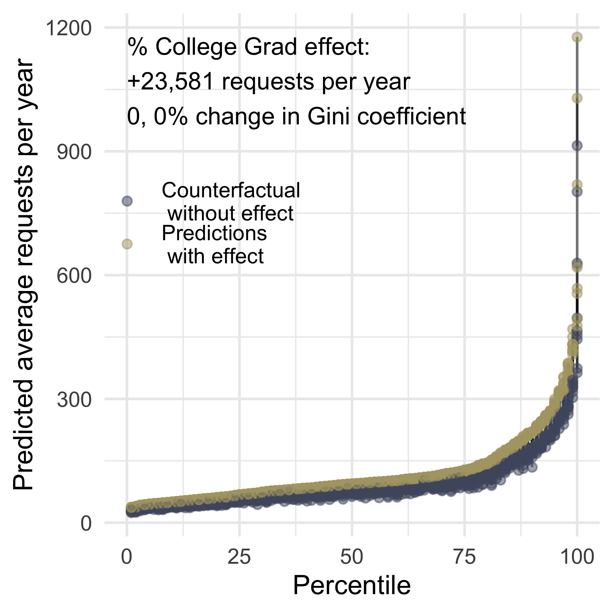
4.3 Capacity
Columns 1, 3, and 5 of Table 4.1 show differences across legislators with different capacity advantages.
Legislators with more institutional capacity make more requests. Model 1 shows that members who have served three or more years, committee chairs, ranking members, and members of prestige committees all provide more interbranch representation than other legislators. Members make more requests of agencies when they serve on a committee to which the agency reports. In the pooled model (1), there is an expected large difference between senators and representatives. We get the same results when we subset to members of the House (Model 3) or Senate (Model 5). Because we estimate the effects of becoming a committee chair and being a member of a prestige committee in the same model, these effects are additive: we should expect committee chairs may make more requests than experienced non-committee chairs, who make more requests than legislators with less experience.
Two indicators of capacity — subcommittee chair positions and prior experience as a state legislator — are not significantly related to overall levels of interbranch representation.
Figure 4.3 shows how differing levels of capacity among legislators shape the total predicted level of inequality in interbranch representation estimated in Table 4.1, model 1. As with Figure 4.1, we first predict the number of requests per legislator per year per agency for all legislator-year-agency observations in the data. Then we estimate counterfactual levels without one or more effects (i.e., where zero members have that form of capacity). Figure 4.3 (a) shows the counterfactual where no legislators have the capacity that comes with a committee chair position. Differences in this counterfactual are concentrated on legislators in the top percentiles because committee chairs tend to do the most interbranch representation. Figure 4.3 (b) shows the counterfactual where no legislators have the capacity that comes with a ranking minority position. Figure 4.3 (c) shows the counterfactual where no legislators have the capacity that comes with more than two years in office. This has the largest impact on the average requests per year because many members of Congress have more than two years of experience, but, unlike committee chairs, they are spread out across the distribution, so this large substantive effect explains a smaller part of the inequality—behaving more like an intercept shift rather than changing the shape of the curve. Figure 4.3 (d) shows that including the additional requests that members of oversight committees make significantly increases the Gini coefficient (compared to a counterfactual where legislators behaved as if they did not have an oversight committee position). Figure 4.3 (e) shows the sum of these capacity effects. In this counterfactual, no legislators have the capacity that comes with a chair, ranking minority position, or more than two years of experience. This represents a world where all members turn over every congress and committees have no staff.
Overall, elements of legislator capacity modeled in Table 4.1 explain a significant share of the inequality in interbranch representation. These differences are both statistically significant and substantively large relative to other causes of variation that are captured in the legislator fixed effects, explaining about 10% of total inequality predicted by the model (not including the capacity differences between members of the House and Senate, which explain another 20% of the inequality in the pooled model).
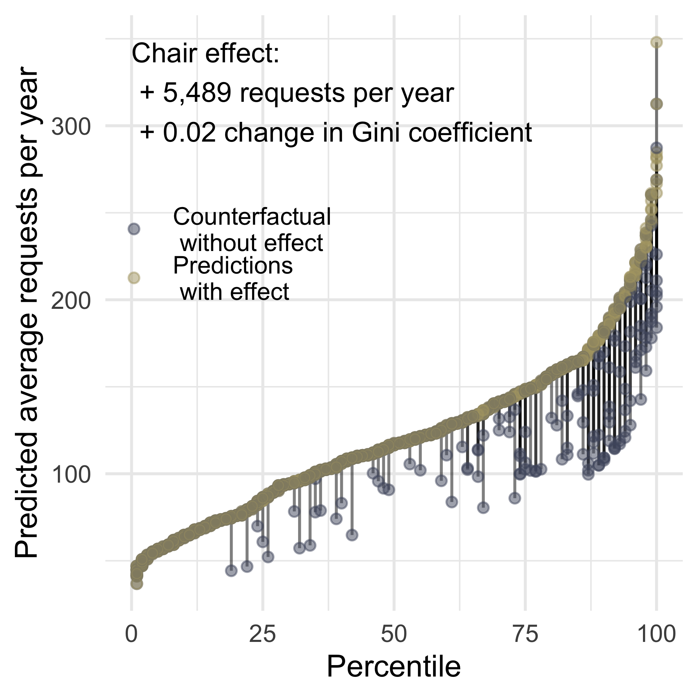
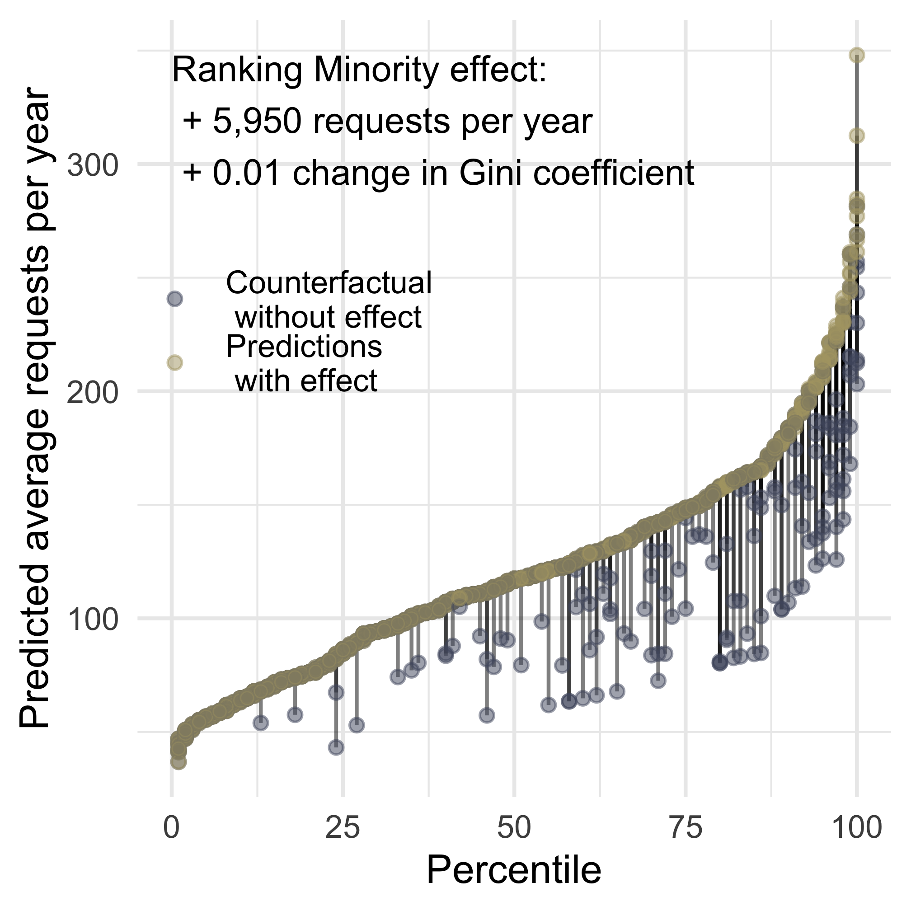
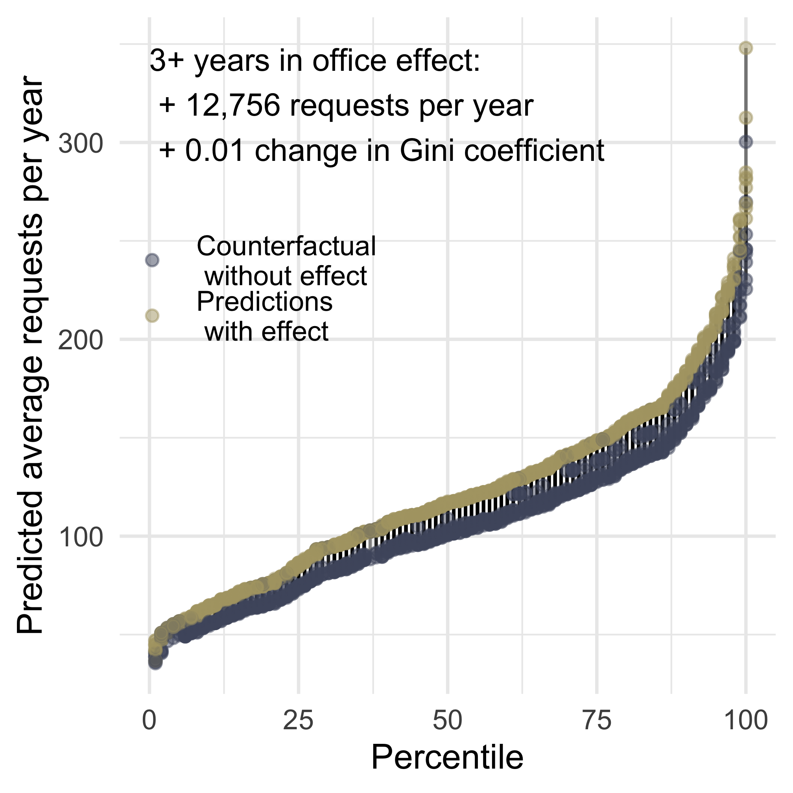
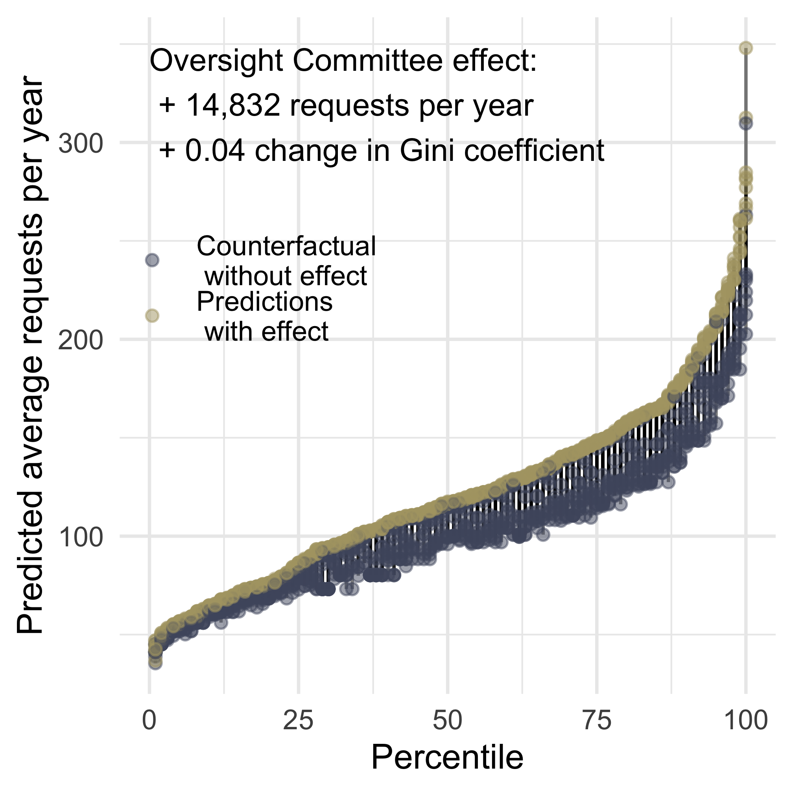
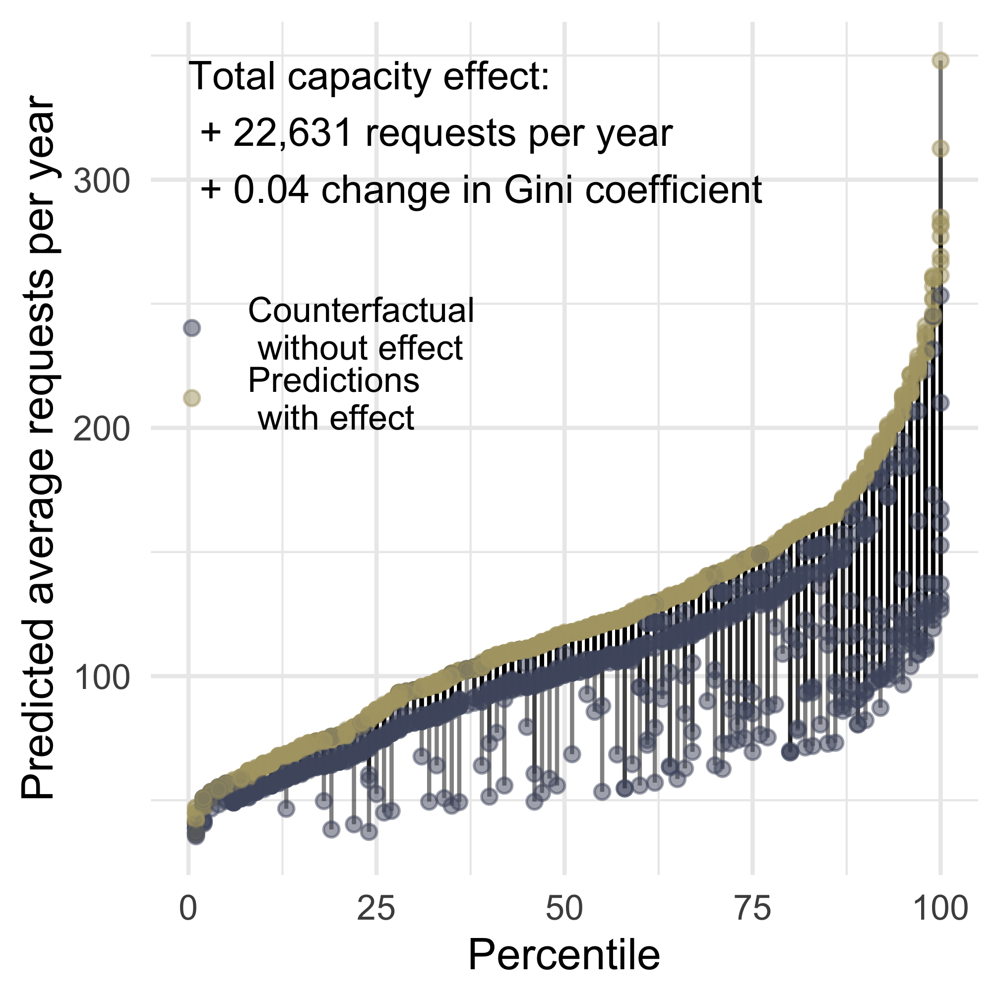
While critical for explaining inequality — which legislators do more or less interbranch representation — cross-sectional differences may be caused by other characteristics of those groups of legislators that we did not measure. For example, if party leaders assign legislators who are better at their jobs to committee leadership positions, then the estimates from Model 1 should be interpreted as more a result of legislators’ (who happen to be committee leaders) perceived ability than capacity that is the result of staff resources. To address potential confounding, model 2 in Table 4.1 shows the difference-in-differences specification. Capacity-related predictors (except subcommittee chair and prior experience in state legislature, which does not vary over time) are all significant predictors of within-legislator variation as well. Gaining a chair position, a ranking member position, or more than two years of experience in office all cause a legislator to engage in more interbranch representation. Joining a committee with jurisdiction over an agency causes a legislator to make more requests to that agency (at least in the Senate). There is also a large increase in interbranch representation when a member of Congress moves from the House to the Senate. This is strong support for the capacity-based theories that motivated Hypothesis 2.5, Hypothesis 2.6, and Hypothesis 2.7.
Staff experience representing the district
To test whether retaining staff from the prior representative impacts interbranch representation, Table 4.2 shows district-level models (estimating counts per district per year per agency with agency-year fixed effects) described in Equation 3.3. Consistent with Hypothesis 2.5 and the positive effect of legislator experience in the legislator-level models above, all specifications in Table 4.2 show a strong negative effect of a district electing a new legislator.
Contrary to the hypothesis that legislators replacing a member of the same party would have a capacity advantage from retaining staff experienced in representing the district, we see that districts where a new representative was elected from the same party see less interbranch representation (Model 1). However, this difference across districts could be the result of other district-level differences. Indeed, there appears to be no relationship in the within-district design (Model 2).1 It is possible that other measures of staff experience and quality would yield different results.
These relationships for electing a new member and whether that member is of the same party are robust to including the variables from Table 4.1 in models 4 and 5.
In sum, capacity effects related to experience and prominent institutional positions have large substantive effects and explain a large share of inequality. But we did not find support for all forms of capacity. Experience in office matters a lot, but we see no evidence that prior elected office does. Committee chair positions greatly increase interbranch representation, but subcommittee chair positions do not.2
| (1) | (2) | (3) | (4) | (5) | (6) | |
|---|---|---|---|---|---|---|
| † p < 0.1, * p < 0.05, ** p < 0.01 | ||||||
| Robust standard errors in parentheses, clustered by district | ||||||
| This table shows estimates of the effect of electing a new member of the same or different party on levels of interbranch representation. | ||||||
| Dependent variable | Count | Count | Count | Count | Count | Count |
| New Member | -0.160** | -0.152** | -0.140** | -0.134** | -0.524** | -0.093* |
| (0.028) | (0.018) | (0.044) | (0.042) | (0.102) | (0.041) | |
| New Member x Same Party | 0.046 | -0.016 | 0.058 | -0.068 | ||
| (0.062) | (0.052) | (0.139) | (0.047) | |||
| Same Party | -0.150* | -0.008 | -0.241* | 0.012 | ||
| (0.059) | (0.050) | (0.121) | (0.053) | |||
| Competitive General | 0.479** | -0.038 | ||||
| (0.116) | (0.032) | |||||
| President's Party | 0.018 | 0.007 | ||||
| (0.047) | (0.029) | |||||
| Republican | -0.045 | -0.089† | ||||
| (0.122) | (0.050) | |||||
| Independent | 0.036 | -0.197* | ||||
| (0.150) | (0.083) | |||||
| Ideological Distance | -0.091* | -0.103** | ||||
| (0.041) | (0.031) | |||||
| Distance x President's Party | -0.026 | -0.006 | ||||
| (0.035) | (0.030) | |||||
| | 1st Dim. DW-NOMINATE | | -0.673† | -0.231 | ||||
| (0.384) | (0.160) | |||||
| Senate | 1.881** | 1.883** | ||||
| (0.068) | (0.094) | |||||
| Observations | 404,647 | 404,631 | 151,975 | 151,837 | 149,887 | 149,751 |
| Year x agency fixed effects | X | X | X | X | X | X |
| District fixed effects | X | X | X | |||
4.4 Strategic Responses to the Political Environment
Interbranch representation as electoral strategy
We find less support for the theory that interbranch representation is reelection-motivated (King 1991). Cross-sectionally, we find differences across members of the House whose prior election was competitive or not (Table 4.1, model 3), but not in the pooled model or the Senate. The within-member designs (models 2, 4, and 6) do not show a difference in behavior when a member had recently faced a competitive election and when they had not. This could be the result of few districts being competitive and even fewer experiencing changes in competitiveness.
Strategic responses to partisan institutions
We find little evidence that having a co-partisan president matters for interbranch representation. In only one specification (Table 4.1, model 2) of the 10 specifications in this chapter is it statistically significant. In that model, the relationship is positive, so there may be some evidence for Hypothesis 2.11 and against Hypothesis 2.12, but, surprisingly, the partisanship of the president is not a consistent predictor of overall levels of interbranch representation.
We had no expectations for overall effects of partisanship, and indeed, Republicans and Democrats do not differ in their overall levels of interbranch representation. Independents may do less: we see a negative correlation in 2 of 4 of the models, cross-sectionally in Table 4.1 model 1, and in the district fixed effects model (6) in Table 4.2. This latter model suggests that the shift from being represented by a Democrat or Republican to an Independent (either by turnover or change in party membership) decreases the amount of interbranch representation a district receives.
Strategic Responses to Agency Objectives
Relatedly, we can also assess competing theories about whether ideological distance between the legislator and agency will lead to more or less interbranch representation (Hypothesis 2.13 and Hypothesis 2.14). When a district elects a representative that is more distant from the perceived ideology of the agency, that district sees less interbranch representation targeting that agency. Conversely, electing a legislator more proximate to the perceived ideology of the agency increases work with that agency — the overall pattern supporting Hypothesis 2.13 over Hypothesis 2.14.
The legislator-level models in Table 4.1 show the same relationship in all of the cross-sectional models (and cannot estimate differences within legislators over time due to little change in ideology scores) — legislators work with agencies that are perceived as more similar to them.
While potentially evidence of strategic behavior, legislators engaging more with agencies that they oversee (agencies that report to the committees they sit on) or those perceived as ideologically similar or distant is more about which agencies representatives target, rather than how much they do overall. However, some agencies receive much more attention than others, and thus, some committees are much more active than others. This uneven distribution of attention leads both oversight committee membership and perceived ideological distance to alter the overall level of interbranch representation, but by different amounts.
Compared to a counterfactual where all members had NOMINATE scores of 0 (subfigure a), predicted levels of interbranch representation are lower but no less unequal. Compared to a counterfactual where all agencies had ideology scores of 0 (subfigure b), predicted levels of interbranch representation are higher and slightly more unequal.
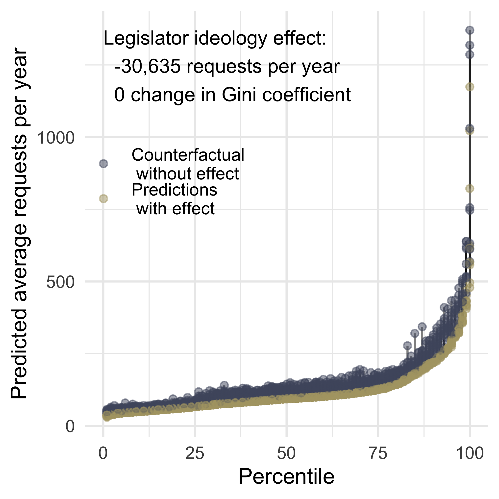
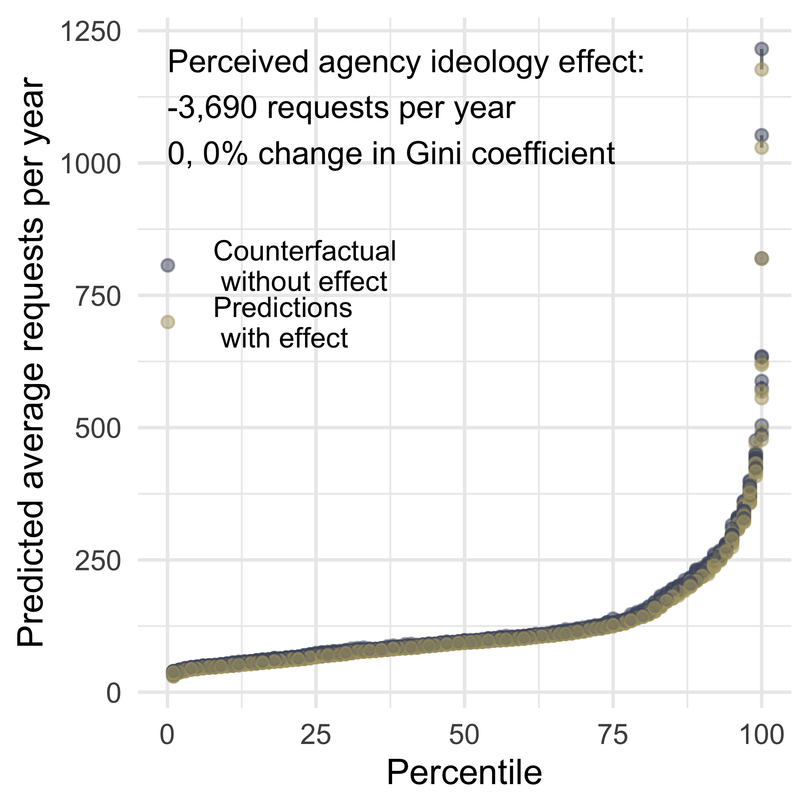
Staff allocation reflects priorities
Legislators who allocate more staff to constituency service make more requests; those who allocate more staff to communications make fewer. Table 4.3, model 1, shows that legislators who allocate more of their budget to constituency service staff provide more overall interbranch representation than other legislators. This makes sense and supports Hypothesis 2.18 because constituency service is the bulk of total interbranch representation. Staff allocation decisions predict the kind of interbranch representation an office is going to do.
Models 3 and 4 include other measures of capacity that may affect staff allocation. For example, committee chairs may be able to re-allocate their office staff to constituency service. Model 3 includes other measures of capacity. Because we estimate the effects of becoming a committee chair and staff allocation in the same model, these effects are additive: committee chairs who allocate more staff to constituency service and less to communications make more requests than other committee chairs, who make more requests than non-chairs. In terms of magnitude, a committee chair position is similar to spending $1 million more per year on constituency service staff.
| (1) | (2) | (3) | (4) | |
|---|---|---|---|---|
| † p < 0.1, * p < 0.05, ** p < 0.01 | ||||
| Robust standard errors in parentheses, clustered by legislator. | ||||
| This table shows estimates of the effect of legislator staff spending. | ||||
| Dependent variable | Count | Count | Count | Count |
| Legislative Spending | 0.329† | 0.178 | 0.159 | 0.088 |
| (0.184) | (0.125) | (0.185) | (0.124) | |
| Comms. Spending | -1.286* | -0.125 | -1.238* | -0.064 |
| (0.582) | (0.321) | (0.580) | (0.318) | |
| Const. Spending | 0.546** | 0.430** | 0.339* | 0.296* |
| (0.162) | (0.129) | (0.166) | (0.120) | |
| Majority | -0.043 | -0.081** | ||
| (0.045) | (0.025) | |||
| President's Party | 0.011 | -0.001 | ||
| (0.036) | (0.022) | |||
| Reporting Committee | 0.278** | 0.008 | ||
| (0.027) | (0.044) | |||
| Three+ Years in Office | 0.155** | 0.103** | ||
| (0.038) | (0.036) | |||
| Committee Chair | 0.295** | 0.204* | ||
| (0.086) | (0.081) | |||
| Ranking Member | 0.190* | 0.119† | ||
| (0.083) | (0.069) | |||
| Prestige Committee | -0.003 | -0.011 | ||
| (0.047) | (0.038) | |||
| Subcommittee Chair | 0.043 | 0.018 | ||
| (0.053) | (0.031) | |||
| Served in State Leg. | -0.056 | -7.860 | ||
| (0.047) | (207213.949) | |||
| Observations | 198,864 | 107,816 | 198,183 | 107,461 |
| Year x agency fixed effects | X | X | X | X |
| Legislator x agency fixed effects | X | X | ||
| House Only | X | X | X | X |
Similar to Figure 4.3, Figure 4.5 shows how the differing allocation of staff spending among members of the House affects the total predicted level of inequality in interbranch representation estimated in Table 4.3 model 1. Figure 4.5 (a) shows the counterfactual where representatives allocate none of their budget to constituency service. Differences in this counterfactual are spread across the distribution because, despite significant variation, most legislators allocate a large share of their budget to constituency service staff. Constituency staff spending levels thus have no impact on inequality, despite having a large impact on the volume of interbranch representation. Figure 4.5 (b) shows the counterfactual where all representatives allocate no resources to communications. This would increase interbranch representation, because communications spending is negatively associated with interbranch representation. However, this effect is also not concentrated (people who spend an unusually large or small amount on communications staff are not clustered on one end of the distribution), so it has little impact on inequality.
Overall, elements of legislator staff allocation modeled in Table 4.3 explain a significant amount of the volume of requests to federal agencies, but do not explain inequality in interbranch representation.
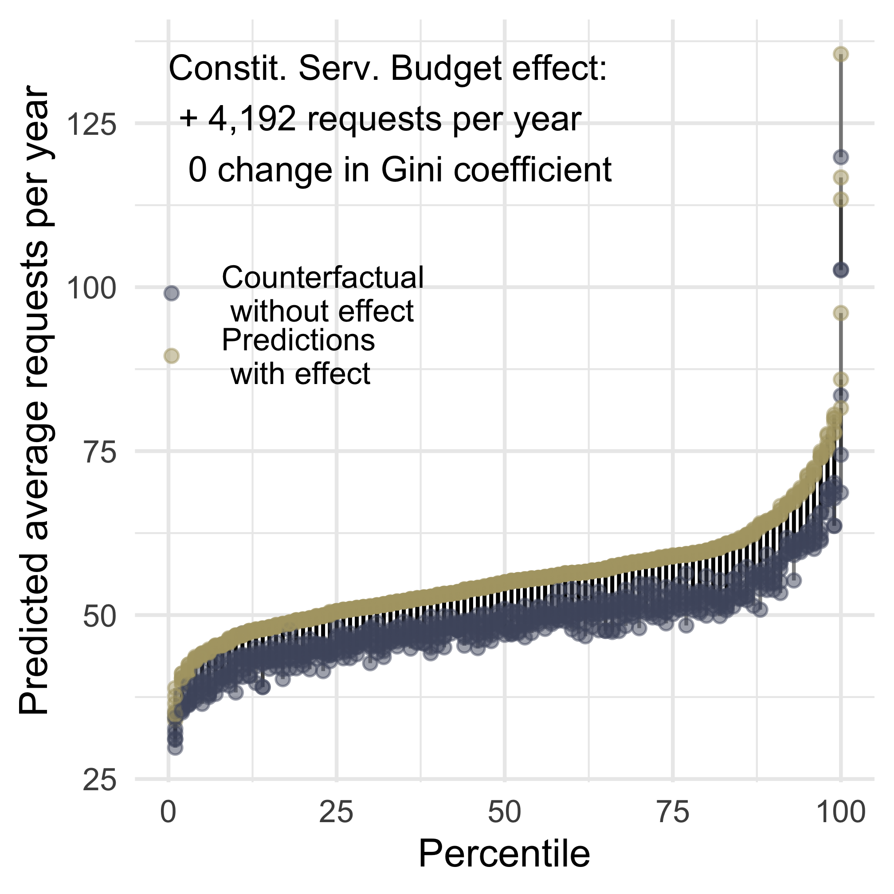
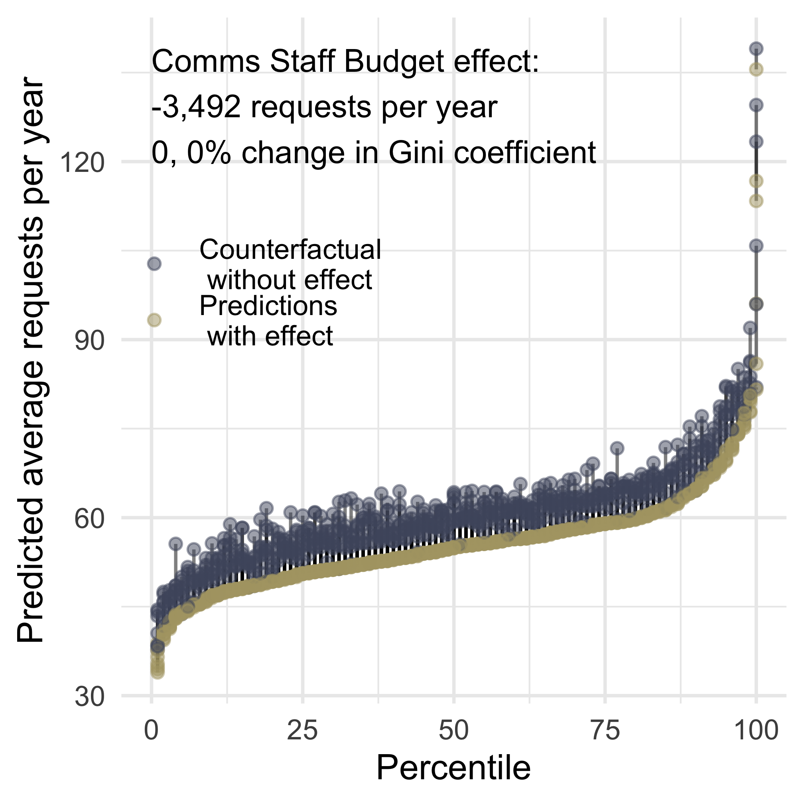
However, these cross-sectional differences may be the result of other legislator characteristics. If members who allocate more staff to constituency service or communications also differ in unobserved ways, then the estimates from Model 1 confound legislators’ unobserved differences with capacity that is the result of staff allocation. To address potential confounding, Model 2 in Table 4.1 shows the difference-in-differences specification. Constituency service staffing is a significant predictor of within-legislator variation as well, but communications staffing is not. A member allocating more of their staff budget to constituency service causes their office to provide more interbranch representation, but we lack causal evidence for communications staffing.
4.5 Conclusion: Total Interbranch Representation Findings
We find that legislator capacity explains the greatest of total interbranch representation, with constituent demand second and legislator strategy third. The strategy dynamics we do find are working with ideologically aligned agencies, and staff allocation decisions in which constituency service staff funding is associated with more overall representation, and communications staff is associated with less.
Two important notes: (1) We only observe whether a legislator is replaced by a member of the same party or a different party after a seat turns over within a 10-year redistricting window. (2) Regarding the difference-in-differences design, it is worth noting that the number of competitive districts that saw turnover both to a member of the same party and to a member of the other party within a 10-year redistricting period is small, so much of the inference in the difference-in-differences comes from turnover in the Senate.↩︎
The alternative model of institutional positions in Section C.2 does show a significant increase in interbranch representation when a Senator becomes a subcommittee chair.↩︎